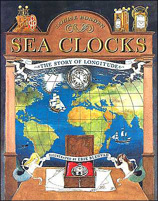

Saturday, January the 1st, 2005
back to: title, date or indexes
Today's quotation is taken from a 1955 compendium of invaluable cheese information. Turophiles can go here to read the Project Gutenberg edition, which I was delighted to note includes the original illustrations by Erik Blegvad, papa of that Godlike genius Peter Blegvad. Here is one of Blegvad senior's drawings, the cover of a non-cheese-related book which has, I aver, a certain magnificent beauty:
